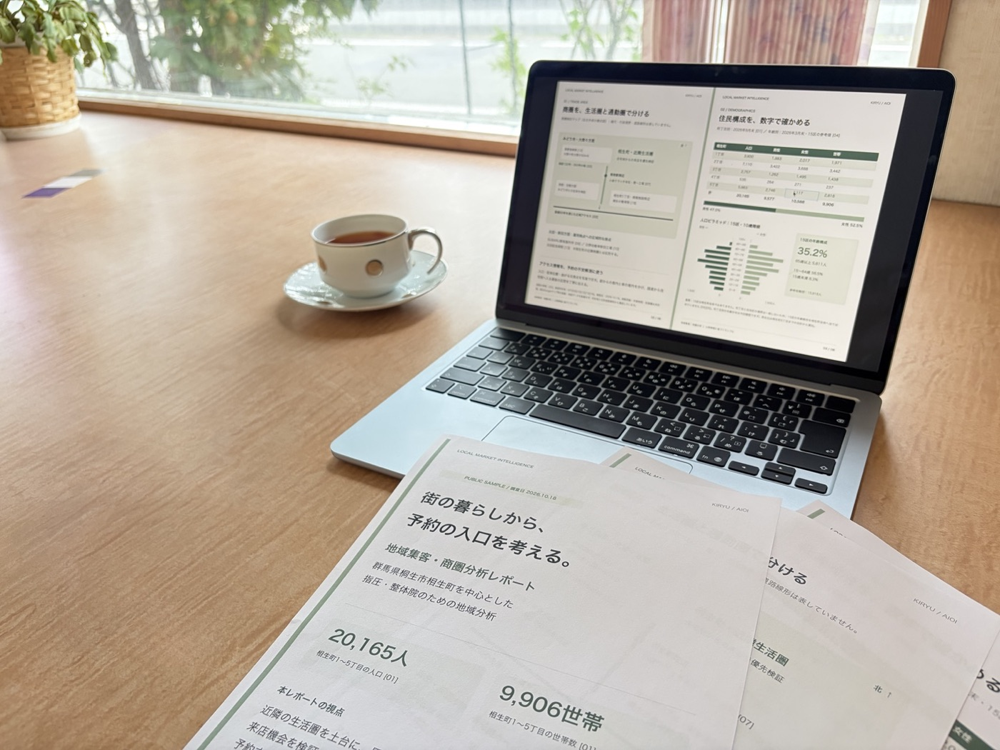
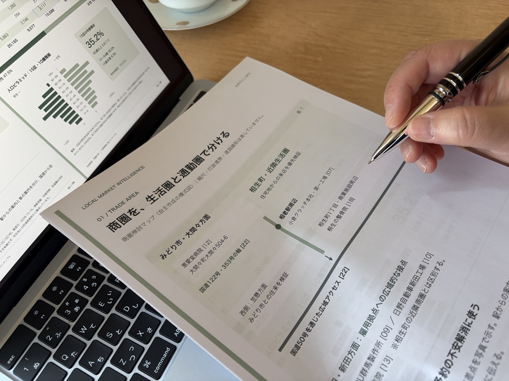

街とお店を知る
人口・世帯・年齢構成、生活圏や通勤の動き、競合の特徴や価格、公開されている集客導線を調べます。
自宅サロンから、スタッフのいる実店舗まで
投稿を増やす前に、
予約につながる道筋を整える。
地域の暮らし、お店の強み、お客様の動き。
個別の分析レポートとご相談を通じて、
今、取り組む集客を一緒に考えます。
フォーム送信後、メールで決済方法をご案内します。

こんなところで、止まっていませんか
必要なのは、お店に合う方法と、取り組む順番を見つけることかもしれません。
場所が違えば、選ばれ方も変わる
駅から歩く街なのか、車で通う街なのか。近所に住む人が多いのか、仕事帰りの人に選ばれるのか。
お客様がお店を知り、比較し、予約するまでの動きは、地域や店舗によって変わります。
Instagramだけに答えを求めず、街の特徴と、お店の強みから予約までの道筋を組み立てます。
レポート付きプランで、一緒に整えること
人口・世帯・年齢構成、生活圏や通勤の動き、競合の特徴や価格、公開されている集客導線を調べます。
Instagram、Googleマップ、ホームページ、LINE。それぞれの役割と、お客様が迷いやすい場所を整理します。
今ある時間や予算を踏まえ、どこから改善するかを個別相談で具体化。取り組むことの優先順位を決めます。

AIを情報整理や調査の補助に使い、実店舗での集客・販売・顧客づくりの経験を重ねて考えます。
調査範囲は、所在地や業種に合わせて調整。確認できた事実と、推測・未確認事項を区別します。
取得できるデータには地域差があります。公開情報を中心に確認し、AIの出力をそのまま結論にはしません。
レポートサンプル
群馬県桐生市相生町を中心とした、
指圧・整体院向けの分析例です。
掲載画像はサンプルです。顧客への納品実績ではありません。画像をタップすると拡大できます。
地域の数字と店舗の条件を結びつけ、予約の入口を考えるための視点を整理します。
人口や男女比、取得できる範囲の年齢構成を確認。行政上の区域と実際の商圏の違いにも注意して読み解きます。
生活圏と通勤圏を分けて検討。入口や駐車位置など、初めて訪れる方の不安を減らす案内を考えます。
人口の変化や地域の指標を確認し、集客を考える材料にします。地域の所得指標から個人の購買力は断定しません。
掲載は登録済みの4ページです。競合比較・集客導線の専用ページは未掲載ですが、レポート付きプランの調査・相談内容に含みます。
サービス内容・申込案内へ個別コンサルティング
レポート付きプランでは、制作したレポートを事前にお渡しし、内容を確認しながら相談します。まず相談したい方には、レポートなし・30分のスポットコンサルティングもご用意しています。
投稿代行、ホームページ制作、各ツールの設定代行は本サービスに含みません。
相談を担当する人
実店舗集客コンサルタント
高梨 有子
集客の先にある、来店、販売、リピートまで。実店舗の経営と顧客づくりの経験から、お店ごとの状況を一緒に考えます。
個別コンサルティングの過去の提供価格：90分30,000円。今回のサービス価格とは異なります。掲載実績は過去のもので、現在の成果を保証するものではありません。
お申込みから、ご相談まで
希望プランを選び、申込フォームから店舗情報とご相談内容をお知らせください。
メールで決済方法をご案内。PayPalまたは銀行振込でお支払いいただきます。
必要な店舗情報を確認します。レポート付きプランでは、地域や競合、集客導線の個別調査を開始します。スポットプランは事前の地域分析レポート制作を行いません。
個別相談の日程をご案内します。レポート付きプランは、相談前にレポートをお渡しします。
予約方法・レポート納期は、正式公開前にご案内します。
選択したプランに応じて、お店に合う集客方法と改善の方向性を整理します。実行サポートプランは90分の相談を4回実施し、30日間の質問サポートを含みます。
サービス・料金
まずは相談したい方から、地域を調べて集客の軸を決めたい方、実行中も相談したい方まで。3つのプランからお選びいただけます。
料金はすべて税込です。各プランのボタンからGoogleフォームへお進みください。
まずは、悩みを整理したい方へ
11,000円（税込）
まずは集客の悩みを相談したい、個人サロン・小規模店舗経営者の方に。
提供開始時期：公開前にご案内
スポットコンサルティングのフォーム送信後、メールで決済方法をご案内します。
おすすめ
地域を知り、お店に合う集客を決めたい方へ
33,000円（税込）
自分の店舗に合った集客方法と、最初に取り組むことを明確にしたい経営者の方に。
提供開始時期：公開前にご案内
レポート納期：公開前にご案内
地域集客戦略コンサルティングのフォーム送信後、メールで決済方法をご案内します。
実行中も、継続して相談したい方へ
120,000円（税込）
戦略を整理するだけでなく、実行しながら継続して相談したい経営者の方に。
投稿・制作・設定などの代行作業や、予約数・売上の成果保証は含みません。
提供開始時期：公開前にご案内
レポート納期：公開前にご案内
集客戦略・実行サポートのフォーム送信後、メールで決済方法をご案内します。
PayPalまたは銀行振込をご利用いただけます。申込フォーム送信後にメールで決済方法をご案内し、入金確認後にサービスを提供します。
調査範囲や取得できるデータは、店舗の所在地・業種・地域特性によって異なります。すべてのプランに代行作業・成果保証は含みません。
よくある質問
はい。Instagramだけに限定せず、Googleマップ、ホームページ、LINEなども含め、お店に合う方法と優先順位を考えます。
はい。エステ、ネイル、美容院、整体院・指圧院など、自宅サロンからスタッフを雇用する小規模店舗までが主な対象です。
オンラインで実施するため、遠方でもご相談いただけます。調査は公開情報を中心に行い、地域によって取得可能なデータは異なります。
スポットコンサルティングには付属しません。地域集客戦略コンサルティングと集客戦略・実行サポートには、分析レポートとオンライン個別相談が含まれます。
成果を保証するサービスではありません。地域・店舗の状況を踏まえ、予約に向けた課題と改善する順番を整理します。
お申込み後、メールでPayPalまたは銀行振込をご案内し、入金確認後にサービスの準備を開始します。レポート付きプランでは個別調査を行います。キャンセル・返金条件は正式な受付開始前に掲載します。
次の集客を、ここから
お店のある街を知るところから、
次に取り組むことを整理しませんか。
Googleフォームで希望プランと必要事項をご入力ください。送信後、メールで決済方法をご案内します。
Googleフォームでも希望プランを選択してください。
地域集客戦略コンサルティング ／ 33,000円（税込）
申込フォームへ進む ↗以下の内容は、リンク先のGoogleフォームでご入力いただきます。
フォーム送信だけで決済は行われません。メールで届く決済案内をご確認ください。